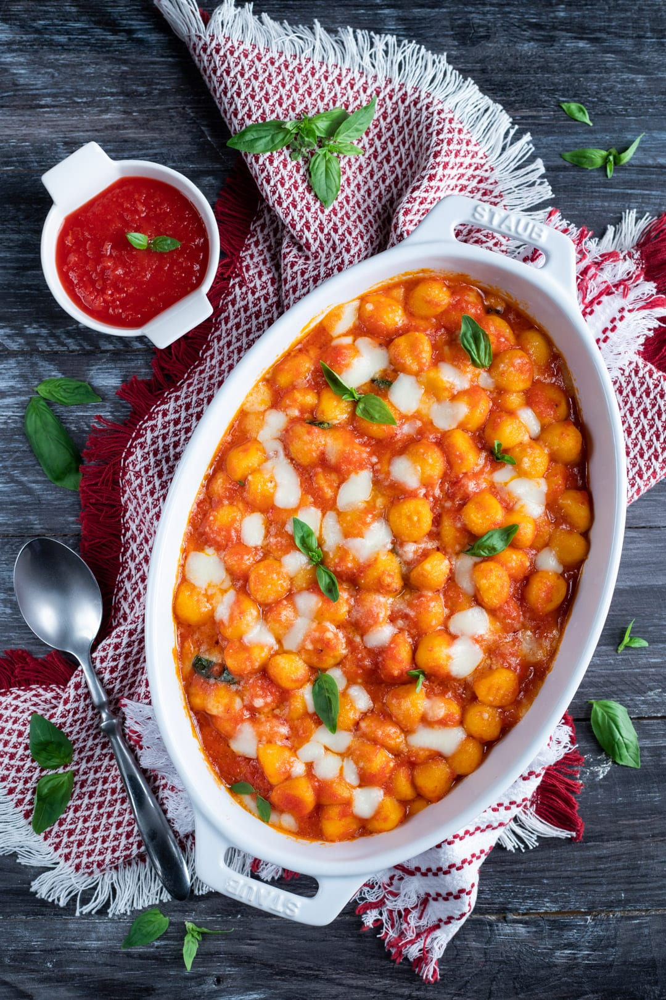

Gnocchi sorrentina

Description
A traditional italian dish, complete with gnocchi and tomato sauce
Ingredients
- Gnocchi
- Passata
- Mozzarella
- Oregano
- Basil
- Salt and pepper
Steps
- Bring a pot of water to boil
- In a large frying pan, add 2 passatas and leave
it in the pan to warm up
- Once warmed up, add some salt and pepper and the
herbs
- Leave it on lowest heat and stir it occasionally
- While it is simmering, dice the mozzarella into
very fine cubes
- Add the gnocchi in the boiling water
- Turn off the heat for the passata and in a rectangular
glass dish, put a few spoons until it covers
the base
- When the gnocchi is cooked, pick it up with the
pasta strainer spoon and put it evenly over the
passata base
- Take a handfull of mozzarella and sprinkle it over
the gnocchi
- Add a few more spoons of passata to cover the gnocchi
and the mozzarella and repeat until there is no more
gnocchi left, making sure there is some
passata and
mozzarella left over
- Use all the passata and mozzarella to cover the remaining
layer of gnocchi
- Put it in the pre-heated oven and leave for about 10 minutes
- Dish out and serve